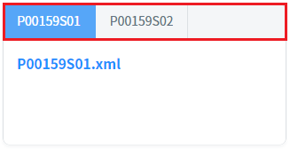
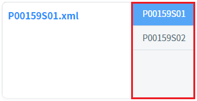
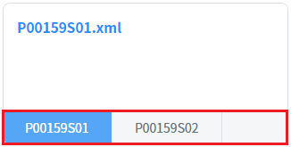
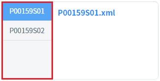
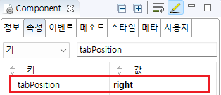

TabControl의 'tabPosition' 속성을 사용하여, 탭의 위치를 설정한 예제입니다. 'tabPosition' 속성에 지정할 수 있는 값은 'top', 'left', 'right', 'bottom' 입니다. 'tabScroll' 속성이 'true'로 지정된 경우 'top', 'bottom'만 지원되며, 'left', 'right'로 지정된 경우 'top'으로 동작합니다.
(기본 동작) 탭 위치 : top
탭 위치 : right
탭 위치 : bottom
탭 위치 : left
각 영역의 TabControl의 탭의 위치를 비교합니다.
예제 영역 '(기본 동작) 탭 위치 : top'에서 테스트합니다.1
실행 결과를 확인합니다.
TabControl의 탭이 상단(top)에 위치합니다.
Image 1.브라우저(Chrome) 실행 예시

예제 영역 '탭 위치 : right'에서 테스트합니다.1
실행 결과를 확인합니다.
TabControl의 탭이 우측(right)에 위치합니다.
Image 2.브라우저(Chrome) 실행 예시

예제 영역 '탭 위치 : bottom'에서 테스트합니다.1
실행 결과를 확인합니다.
TabControl의 탭이 하단(bottom)에 위치합니다.
Image 3.브라우저(Chrome) 실행 예시

예제 영역 '탭 위치 : left'에서 테스트합니다.1
실행 결과를 확인합니다.
TabControl의 탭이 좌측(left)에 위치합니다.
Image 4.브라우저(Chrome) 실행 예시

1
속성을 정의합니다.
지정할 수 있는 값은 "top", "left", "right", "bottom" 입니다.
속성 tabScroll이 "true"로 지정된 경우 "top", "bottom"만 지원되며, "left", "right"로 지정된 경우 "top"으로 동작합니다.
[필수] tabPosition="right" //탭이 오른쪽에 위치됩니다.
(옵션 설명)
"top" : 위에 위치.
"left" : 왼쪽에 위치.
"right" : 오른쪽에 위치.
"bottom" : 하단에 위치.
Image 5.웹스퀘어 스튜디오의 Component View - 속성 설정 예시

Example 1.Source
<!-- tabControl 소스 본문 예시 --> <w2:tabControl tabPosition="right" id="tac_exam2"> <!-- 중략 --> </w2:tabControl>
tabPosition